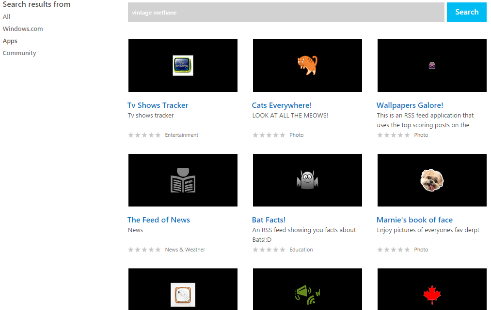
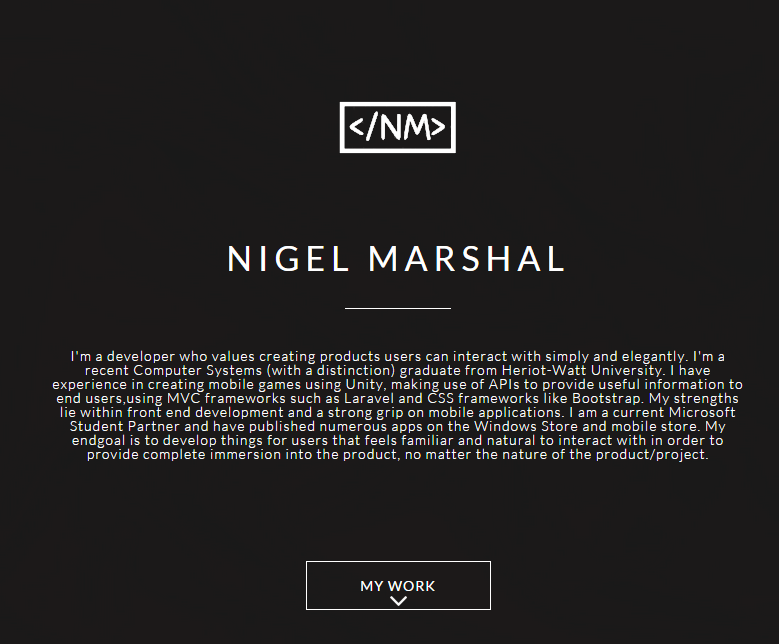

EDUCATION
BSc Computer Systems with Distinction
3 Years Course

Heriot-Watt University
GRADUATED IN NOVEMBER 2014
I'm a front-end developer with a strong UX background. I enjoy smashing down on the keyboard and creating products the end users enjoy interacting with in a simple and friendly manner. I've majored in Computer Systems with a distinction from Heriot-Watt University. I have experience in front-end development and UX such HTML5, CSS3, wireframing User testing and technical/project management. I have been a Microsoft Student Partner for a year and have participated in the MSP hackathon where I was in the top 10.
I'm constantly looking for oppurtunities to improve and catch up with latest development trends to deliver end products to ensure clients do not lose their minds.
BSc Computer Systems with Distinction
3 Years Course
Heriot-Watt University
GRADUATED IN NOVEMBER 2014
July 2016 - CURRENT
Junior UX Developer
rbbi

• Worked with a growing development team on various project and introduced modern technology, patterns and code styles such as the usage of SASS, to ease the workflow between simultaneous large projects.
• Developed full scale landing pages that were optimised for mobile, tablet and desktops for various clients.
• Continuously improved and worked on the main company website
SEPTEMBER 2015 - NOVEMBER 2015
Microsoft Student Partner
Microsoft

• Built and published over 15 Windows Store and Windows Phone Store applications in a span of 6 hours for the MSP hackathon where I placed 7th against 25+ competitors.
• Integrated multiple APIs, especially social ones such as Facebook, Twitter, YouTube and Instagram.
• Completed three courses on Microsoft Virtual Academy and was ranked in the Top 10 of the UAE monthly scoreboards.
JUNE 2014 - SEPTEMBER 2014
Mentor
Heriot-Watt University
• Took control and managed a class of over 40 students, supervised 5 other volunteers, prepared presentations and programming activities.
• Participated in the development, organization and successful execution of teaching young adults from 3 different schools.
FEBRUARY 2014 - FEBRUARY 2014
Mobile Autonomous Robotics Workshop certificate
MBR
NOVEMBER 2014
Winner of 2015 MSP Hackathon
Microsoft
MARCH 2015

Bubble e-commerce site
For my university project, my partner and I had to create an e-commerce site that was visually appealing, had item checkout capabilities and was coded securely to protect from SQL injection attacks. I worked on the homepage and back-end security using white listing and salt to protect from SQL attacks
front-end, back-end, html, css, e-commerce, security, sql

STOCKBAE: Financial Advisor Web Application
STOCKBAE was a yearlong project where I played various roles in a team of 6. I was the minute keeper, usability expert, documentation writer and did both front-end and back-end development. As a usability expert I was able to help the team through the design phases with creative suggestions based on user feedback and experience. As a developer I helped with the initial looks of the site and worked on the functionality with my team. The application was designed to help clients and financial advisors have better control on their stock options. Laravel, an MVC framework was used for development to keep the code clean. To retrieve the stock information, the application was connected to Yahoo Stock Market API. The GitHub link can be found here: StockBAE
web design, front-end, back-end, laravel, mvc, finance, html, css

Windows Applications (Hackathon)
As a Microsoft Student Partner I was gifted many opportunities by the Microsoft Campus in U.A.E to learn more about development. I took part in the MSP hackathon where we were given 6 hours to make as many windows applications as we can and publish them online. Against 25+ participants I placed in the top 10 winners with 15 applications
apps, hackathon, competition, mobile programming, windows

My Twitter Followers
My partner and I created a responsive web application that connects with the twitter API to get details of followers for a certain user. The details are then stored on a database. AJAX was used to create a button that communicated with a server, similar to have Facebook uses its "like" button.
web design, ajax, twitter, api, front-end, database

Initial portfolio design
I was initially working on a minimalistic portfolio to display my works and was trying out Parallax scrolling and various javascripts. I abandoned the portfolio design early on as I felt it did not properly display my creative side and skills as my current site does.
web design, portfolio, front-end, html, css